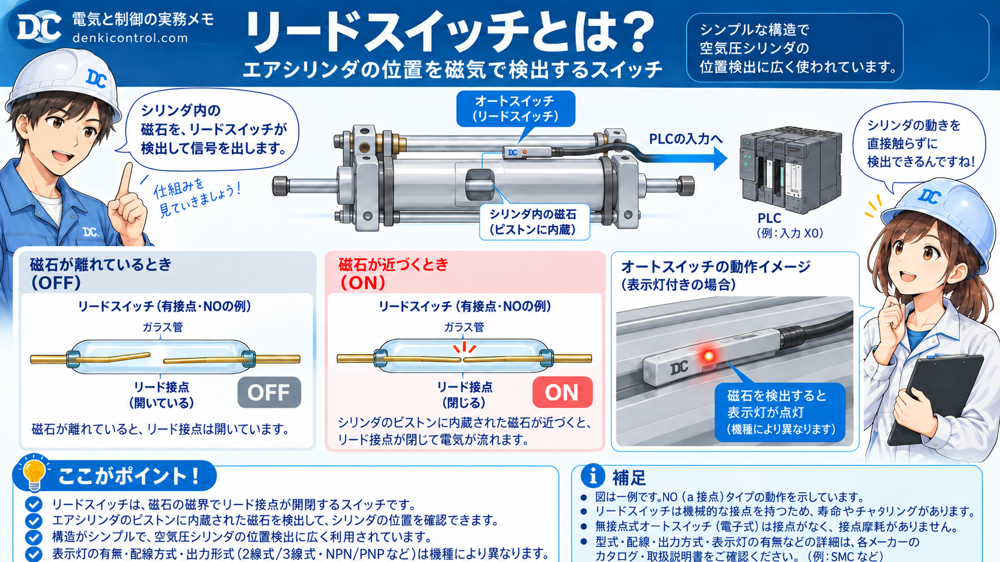
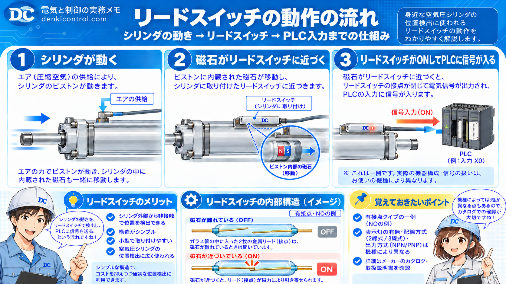

リードスイッチとは？
リードスイッチは、磁力で接点が切り替わるスイッチです。 中に入っている接点が、磁石が近づくことで動いてON/OFFが切り替わります。
現場では単体で使うというより、エアシリンダの位置検出で見ることが多いです。 設備を見ていると、シリンダの側面や溝の部分に取り付けられていることがあります。

どうやって動くのか
リードスイッチの中には、細い接点が入っています。 普段は離れていて、磁石が近づくと引き寄せられて接点がつながります。
磁石が遠いとき
- 接点は離れている
- 出力はOFF
- PLC入力も入らないことが多い
磁石が近いとき
- 接点が切り替わる
- 出力はON
- PLC入力で位置確認しやすい
エアシリンダとの関係
エアシリンダの中には、ピストンに磁石（マグネット）が入っているタイプがあります。 シリンダが動くと、その磁石も一緒に移動します。
その外側にリードスイッチを取り付けておくと、ピストンが近づいた位置でONになり、位置確認ができます。

よくある用途
- 原点確認
- 端点確認
- 動作完了確認
- PLC入力への取り込み
考え方のコツ
リードスイッチは、シリンダ内部のピストン位置を直接見ているわけではなく、内蔵磁石を外から検出している と考えると理解しやすいです。
現場で見るポイント
1. 本当にリードスイッチか確認する
まずは型式や取り付け位置を見て、リードスイッチかどうか確認します。 メーカーによって見た目や呼び方が違うことがあります。
2. 取り付け位置を見る
位置がずれていると、検出タイミングが変わったり、うまくONしないことがあります。 シリンダ端で反応してほしいのか、途中位置で反応してほしいのかも見ます。
3. LED表示を見る
多くのリードスイッチは、検出時にLEDが点灯します。 動いているのにPLC入力が入らない時は、まずLEDが点くかどうかを見ると切り分けしやすいです。
4. PLC入力も確認する
スイッチが反応していても、配線やPLC側入力の問題で入っていないことがあります。 GX Works3 で X入力が切り替わるか確認すると追いやすいです。
よくある混乱
近接センサと同じだと思ってしまう
役割は似て見えますが、見ているものが違います。 リードスイッチは磁石を見ています。 近接センサは金属検出で使うことが多いです。
リミットスイッチと同じだと思ってしまう
リミットスイッチは、物理的に当たって切り替わることが多いです。 一方でリードスイッチは、磁力で切り替わるのが大きな違いです。
シリンダが動いているのに入力が入らない
この場合は、以下の順で見ると追いやすいです。
- スイッチ位置が合っているか
- LEDが点灯するか
- 配線に問題がないか
- PLC入力が入っているか
- そもそもシリンダ側が磁石内蔵タイプか
まとめ
リードスイッチは、磁石の近さでON/OFFが変わるスイッチです。 現場では、特にエアシリンダの位置検出でよく使います。
基本の覚え方
- シリンダの中に磁石がある
- 外側のリードスイッチで検出する
- PLC入力で位置確認に使う
まず押さえたいこと
- 取り付け位置
- LED点灯
- PLC入力の変化
次に読むとつながりやすい記事
リードスイッチの次は、NPN / PNP や NO / NC を見ておくと、配線や入力の見方がさらに整理しやすくなります。